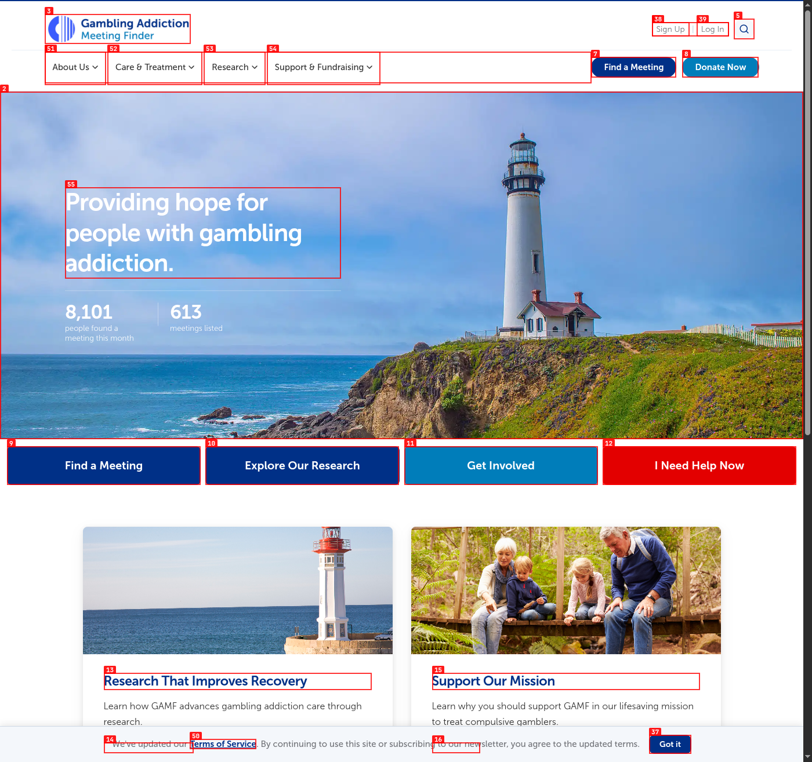

1. Search button appears broken
MediumThe homepage header includes a visible Search meetings button, but clicking it does not navigate, open a search panel, or provide any visible response.
- What the user sees: a button that looks active but does nothing.
- Why it matters: this reduces trust right at the top of the homepage.
- Recommended fix: connect the button to the meeting search experience or remove it until it is ready.

Observed result: clicking the search button leaves the user on
the same homepage with no response.